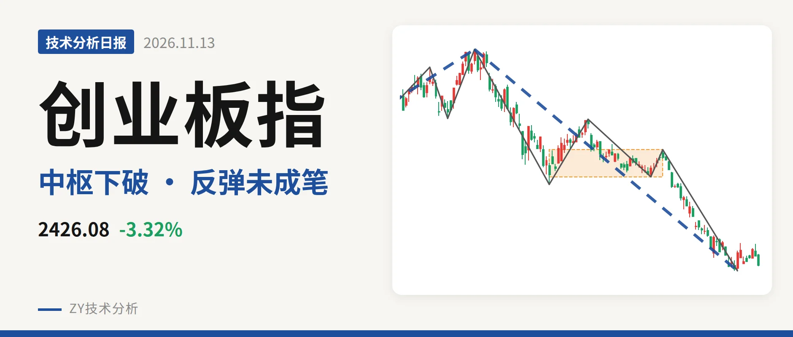
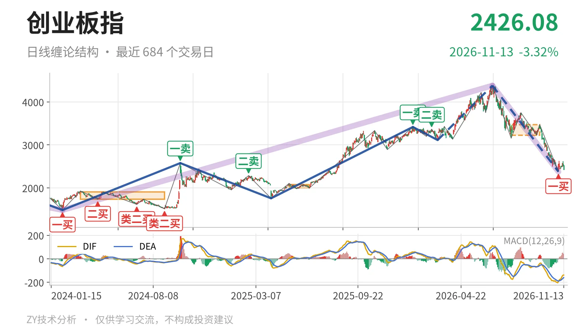
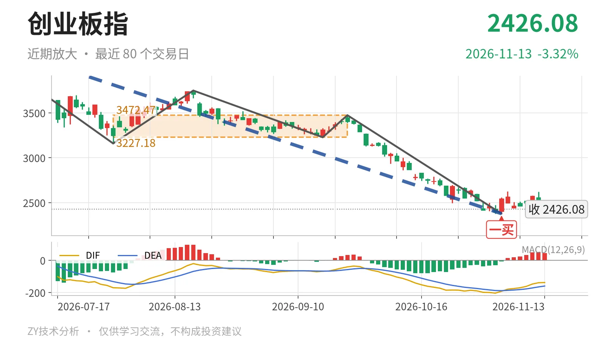

创业板指｜跌破日线中枢，反抽看3227点

最近日线中枢 3227.18—3472.47点，收盘位于中枢之下
一句话：日线笔一买后反弹未成笔，价格仍在最近中枢下方。
📉 走势结构：上涨调整未结束
2024年2月5日至2026年6月25日的上涨走势从1482.99点到4380.41点，上涨约195.4%，仍在延续；但6月25日至11月4日的日线级别下跌段从4380.41点到2376.28点，跌约45.8%，没有结束。最近一段日线线段仍站在2022年4月27日至2023年8月4日线段中枢2122.32—2282.65点的上方，但已经明显跌破7月后的日线笔中枢。结构上属于大级别上涨中的深幅回落，不是简单的中枢震荡。

🧭 中枢与位置：最近日线笔中枢下破24.8%
最新收盘2426.08点，低于7月30日至9月22日尚未完成的日线笔中枢下沿3227.18点约24.8%。该中枢区间为3227.18—3472.47点，中轴3349.83点。短期中枢从高位被向下打破，价格距中轴更远；更大级别看，2426.08点仍在该线段中枢上沿2282.65点上方，尚未回到2022年以来的长期箱体内部。
📐 买卖点：11月4日一买只对应笔级别
11月4日的2376.28点一买，落在9月22日至11月4日的日线下跌笔末端，性质是笔级别。11月5日至11月13日只有7根K线，最高2625.99点、最低2417.22点，收于2426.08点，尚未形成新的日线上涨笔。因此这个一买目前只对应较小级别反抽。3月9日的线段三买3111.88点已被后续下跌跌破，只能对应更小级别，不再是日线线段级别的三买。

📉 背驰：面积收敛，DIF低点继续下移
比较6月25日至7月30日与9月22日至11月4日两段下跌笔：前者绿柱面积1837，DIF低点-171.1；后者绿柱面积1107，DIF低点-204.5。价格从3158.14点下移到2376.28点，绿柱面积缩小，但DIF低点同步降低，只构成力度部分收敛，不是标准的新低不新弱。最新DIF为-138.6，DEA为-160.5，仍在零轴下，柱43.8，下跌段还没有被逆转。
🧿 关键位置观察：3227点下沿定结构
关键位置看3227点附近，也就是最近日线笔中枢下沿。若反抽不能回到3227点上方，结构上构成对最近日线笔中枢的三卖，下跌段仍会延续。若重新站上3227点，则更可能是中枢向下扩展，而不是标准三卖。更下方观察2283点附近，即2022年4月27日至2023年8月4日线段中枢上沿2282.65点；守住该线之上，大级别结构仍在线段中枢上方。当前反弹未成笔、DIF零轴下、价格低于最近日线笔中枢下沿，结构偏弱。
⚠️ 本文为基于公开行情数据的缠论技术结构记录，由程序自动计算并生成，仅供学习交流，不构成任何投资建议。市场有风险，投资需谨慎。